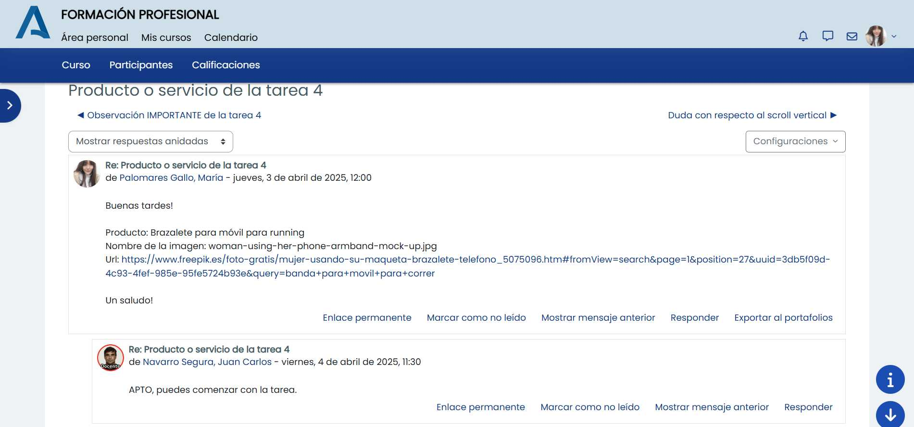
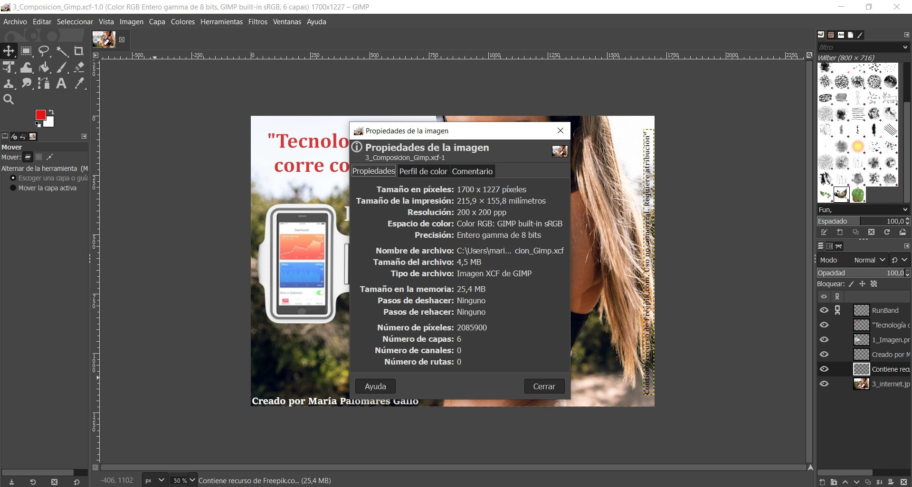
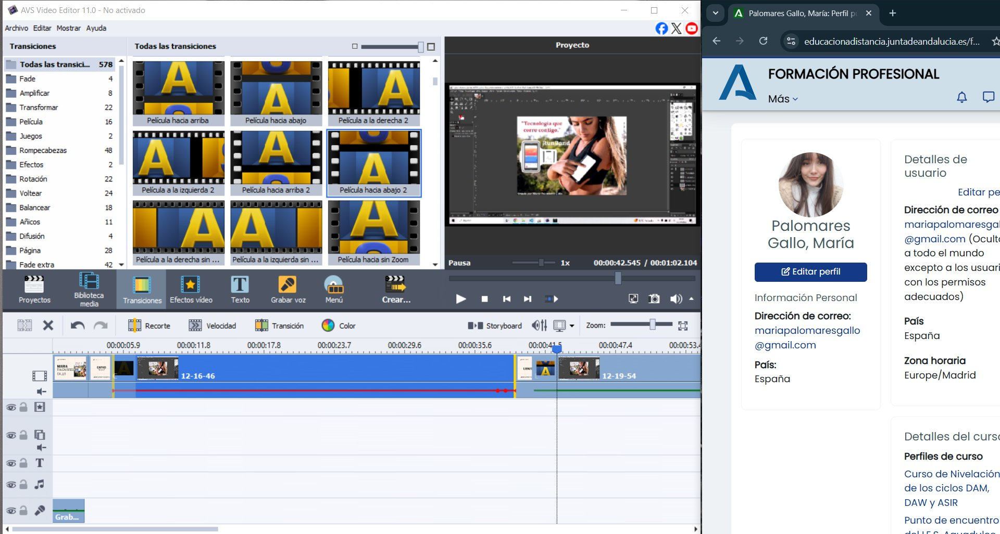

Aportación en el foro
Logo
URL del logotipo (creación propia o descargado)
Imagen
Licencias creative commons: Licencia CC BY-NC 4.0
Justicicación (restricciones): Esta imagen está bajo una licencia Creative Commons (CC BY-NC 4.0), que restringe su uso comercial. Esto significa que no se puede utilizar para generar ingresos ni en contextos comerciales. Además, la licencia exige la atribución adecuada, por lo que es necesario mencionar al autor de la imagen, en este caso Freepik. En la imagen de la tarea, he incluido tanto el nombre del propietario como la atribución requerida por la licencia.
Internet
URL de la imagen (no la URL de la página web principal de la imagen)
Composición
Composición 1000
Medida 1: 1000 px anchura
Medida 2: 722 px altura
Composición 400
| Formato del recurso | Dimensiones (Ancho x Alto) | Tamaño (KB o MB). Usar la misma unidad de medida | |
|---|---|---|---|
| logo.svg | .svg | 560 x 432 px | 8'75KB |
| 1_Imagen.xxx | .png (La he utilizado para poder usar la transparecia, aunque podía usar webp también) | 500 x 500 px | 147KB |
| 2_Internet.xxx | .jpg | 1700 x 1133px | 464KB (La imagen la he tenido que reducir porque me ocupaba demasiado la composicion, como 61MG y no podía ocuparme tanto, lo que he hecho ha sido dejarla a 1700 y así podía aplicar las escalas de la tarea sin problema) |
| 4_Composicion.xxx | .webp (He usado webp porque no pierde calidad y ocupa mucho menos espacio) | 1700 x 1133 px | 202KB |
| 5_Composicion_1000.xxx | .webp | 1000 x 722 px | 130KB |
| 6_Composicion_400.xxx | .jpg (Con webp aquí las letras salían borrosas y no definidas así que he usado jpg) | 400 x 289 px | 50'4KB |
Información sobre la canción
Tipo de licencia: La canción se puede utilizar de forma gratuita incluso con fines comerciales. No requiere atribución, pero no se permite revenderla ni distribuirla de forma independiente. Ideal para proyectos web por su facilidad de uso y por ser libre de derechos.
URL de la canción (no la URL de la página web principal de la canción)
Información sobre 1_audio.mp3 y 2_audio.ogg
Justifica las decisiones tomadas en los audios (formatos y optimización de ficheros): He utilizado MP3 porque permite almacenar audios con buena calidad, ofrece una excelente compresión y es compatible con la mayoría de los navegadores. También he utilizado el formato OGG porque es un formato libre, eficiente en la compresión y compatible con la mayoría de navegadores modernos.
Tabla
| Formato del recurso | Tamaño (KB o MB). Usar la misma unidad de medida | Duración (expresado en segundos) | |
|---|---|---|---|
| Canción descargada | .mp3 | 5734,4 KB | 230 segundos |
| 1_audio.xxx | .mp3 | 772 KB | 19 segundos |
| 2_audio.xxx | .ogg | 782 KB | 19 segundos |
Información sobre la composición del video
- Nombre de la aplicación utilizada para la edición del video: AVS Video Editor
- Nombre de las transiciones que has utilizado: 1. Flash oscuro. 2. Película hacia abajo
-
Captura de pantalla con la línea de tiempo del proyecto:

Información sobre 1_video.xxx y 2_video.xxx
Justifica las decisiones tomadas en los videos (formatos y optimización de ficheros): He utilizado en primer lugar .mp4, es el formato más compatible con la web y es muy bueno para la compresión dándole calidad al vídeo y un peso reducido. Tiene una alta compatibilidad con todos los navegadores e incluso diferentes dispositivos. Quería usar .webm, pero la aplicación de vídeo no me lo permitía y no sabía como hacerlo, este formato sería el más parecido al anterior, de los que disponía lo he guadado en .mkv es bueno en la conversión a otros formatos, compatible con la web y de los ofrecidos es el que más he notado la reducción del peso del vídeo sin afectar a la calidad.
Tabla
| Formato del recurso | Tamaño (KB o MB). Usar la misma unidad de medida | Duración (expresado en segundos) | |
|---|---|---|---|
| Video (Presentación) | .mp4 | 65KB | 4 segundos. Como lo he hecho directamente con la aplicación me ha separado el audio |
| Video (Capas) | .mp4 | 8.357,52 KB | 35 segundos |
| Video (Lienzo) | .mp4 | 4.710,4 KB | 20 segundos |
| 1_video.xxx | .mp4 | 7.833,6 KB | 60 segundos |
| 2_video.xxx | .mkv | 13.107,2 KB | 60 segundos |